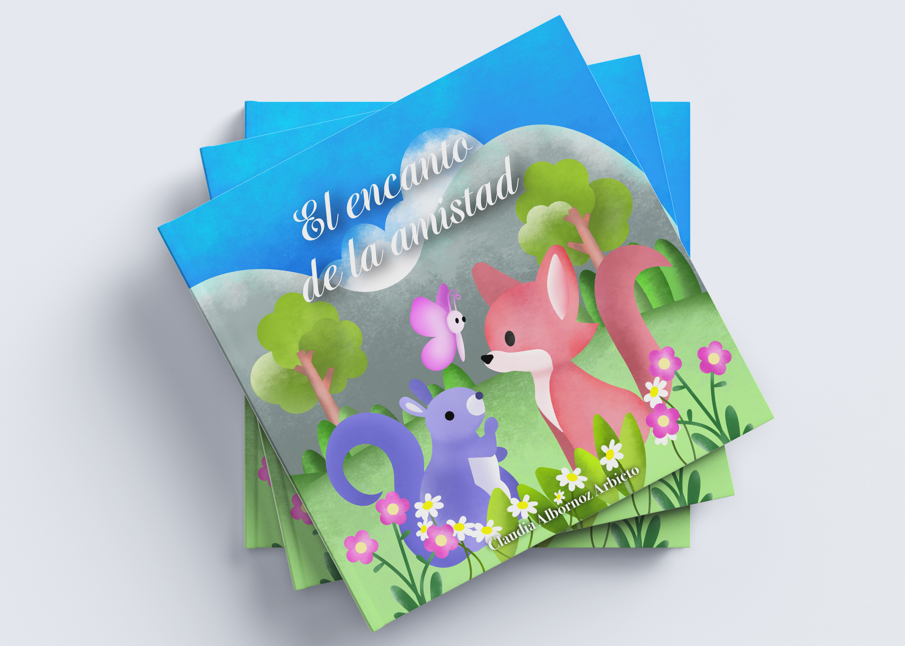

Fotografía de eventos y artistas

El proyecto de fotografía de eventos y artistas fue desarrollado con el objetivo de documentar momentos reales, espontáneos y auténticos dentro de distintos contextos culturales, musicales y sociales. A través de una mirada contemporánea y estética, se buscó capturar la energía del evento, la presencia escénica de los artistas y la conexión con el público.
El enfoque visual se centró en la narrativa documental, combinando composición, iluminación natural y edición digital para lograr imágenes dinámicas, modernas y coherentes con la identidad de cada evento artístico.
Tabla de contenidos:
Concepto creativo
La propuesta visual se basa en la fotografía documental contemporánea, donde cada imagen busca transmitir la atmósfera real del evento artístico. El objetivo principal fue capturar momentos auténticos sin intervención, resaltando la energía del escenario, la expresión de los artistas y la respuesta del público.
“La fotografía de eventos artísticos no solo documenta el escenario, sino que traduce la energía del artista en una experiencia visual.”
La narrativa visual se construye a partir de momentos espontáneos, luces escénicas y emociones en vivo, priorizando la autenticidad del instante sobre la perfección controlada.
Cobertura de eventos y artistas
El trabajo fotográfico se centró en registrar distintos tipos de eventos culturales, musicales y artísticos, capturando tanto la presencia escénica de los artistas como la interacción con el público y la atmósfera general del evento.
- Fotografía de conciertos y eventos musicales
- Cobertura de presentaciones artísticas en vivo
- Registro de interacción entre artistas y público
- Captura de atmósferas escénicas y culturales
Eventos
La fotografía de eventos captura momentos reales en tiempo vivo, transmitiendo la energía del ambiente, las interacciones y la esencia de cada ocasión de forma auténtica y visual.
Enfoque fotográfico
Se trabajó con un estilo documental y cinematográfico, priorizando la luz del escenario, el movimiento y los encuadres que transmiten intensidad y presencia artística.
Edición fotográfica
La edición se enfocó en mantener una estética realista y expresiva, resaltando contrastes de luz, colores escénicos y la atmósfera propia de cada presentación artística.
Dirección visual
La dirección visual buscó coherencia entre todas las piezas fotográficas, generando una identidad sólida adaptable a portafolios, redes sociales y material promocional de eventos.
Herramientas utilizadas
Adobe Lightroom fue utilizado para la edición, corrección de color y creación de una estética visual coherente en toda la serie fotográfica.
Adobe Photoshop fue utilizado para ajustes finales, retoques específicos y optimización de imágenes para formatos digitales y portafolio.
Retos del proyecto
La fotografía de eventos artísticos implica desafíos constantes debido a la naturaleza impredecible del escenario y la rapidez de los momentos.
- Condiciones de iluminación cambiantes en tiempo real
- Captura de momentos espontáneos sin intervención
- Movilidad constante durante el evento
Resultado visual
Los resultados reflejan una narrativa visual auténtica y contemporánea, donde cada imagen documenta la esencia del evento artístico y la energía de los artistas en escena.
- Narrativa visual auténtica: Captura de momentos reales, emociones y energía escénica en eventos artísticos.
- Versatilidad fotográfica: Adaptación a distintos formatos de eventos culturales, musicales y artísticos.
- Identidad visual moderna: Coherencia estética basada en composición, luz escénica y edición contemporánea.
 Hablemos de tu proyecto!
Hablemos de tu proyecto!